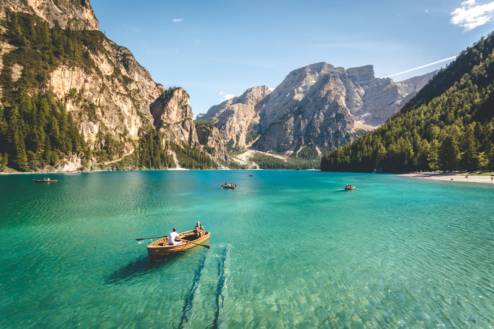
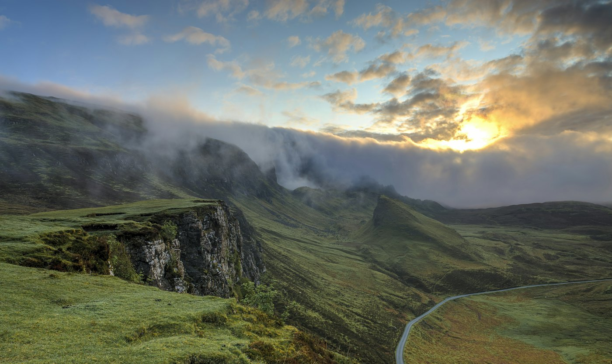

Lesson 01 · Exercise 08
Three landscapes already have a dark frame. The colored mat is hidden behind each photo. Padding lets the mat show. Margin lets the gray wall show.
Frame 1 · a thin mat on every side

Frame 2 · a wider mat on every side

Frame 3 · a different amount of mat on each side